| 日付 | 2008年11月22日（土） - 2008年11月23日（日） | ||||
|---|---|---|---|---|---|
| 山域 | 奥多摩 | ||||
| メンバー | 友人（男2女2） | ||||
| 山行形態 | 1泊2日無人小屋泊 | ||||
| アクセス | 電車、バス | ||||
| ルート (Map) |
|
1泊2日で奥多摩三山の山行に誘われる。
ここ最近は以前登ったことのある山ばかりに行っている。
今回の山も三山とも既に登頂済みだ。
近くの山だと未踏峰はだいぶ少なくなってきた。
前回の塔ノ岳山行のときにカメラが壊れてしまい修理中なので、
当分の間、携帯電話での撮影になる。
1日目
9:30 都民の森バス停到着。標高990m。
バス停近辺は既に大混雑だ。
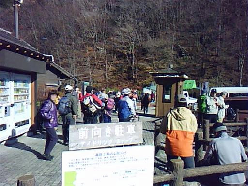
登山道に入っていく。この辺りは縦横無尽に登山道が整備されているので、
少し外れたところに行くと人影はだいぶ少なくなる。
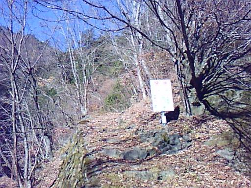
三頭ノ大滝に到着。落差は大きいが、形は割と平凡な滝だ。
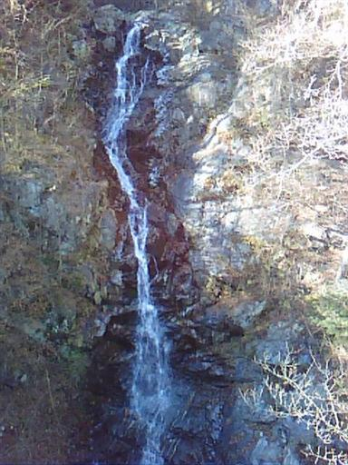
登山道脇にはところどころに巨木が見られる。
それ以外の木はヒョロッとしているものが多いため、ギャップがかなりある。
奥多摩といえば植林地帯のイメージがあるが、
この辺りは昔からよく自然が守られていたのだろうか？
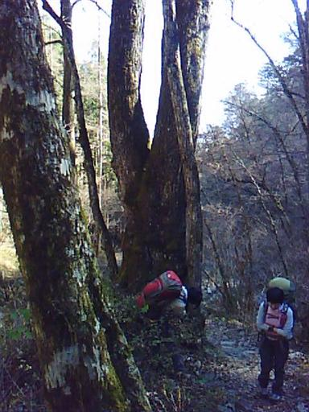
変わった形の霜柱。
植物が放出する水が凍ってこのような形になるらしい。
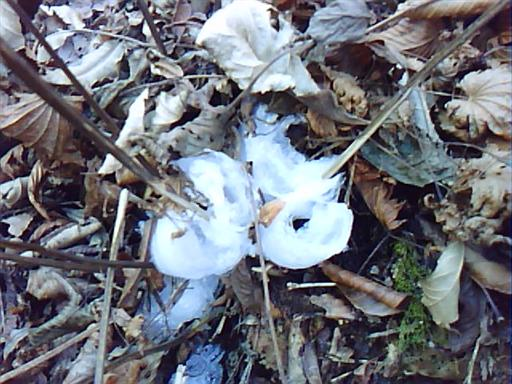
標高を上げていくと葉を付けている木は無くなり、完全に冬の景色になる。
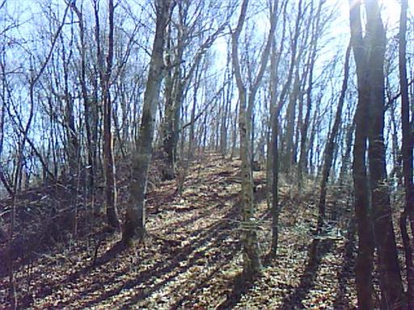
今日はよく晴れていて、富士山がきれいに見えている。
奥多摩からきれいに富士山が見えたのは初めてかもしれない。
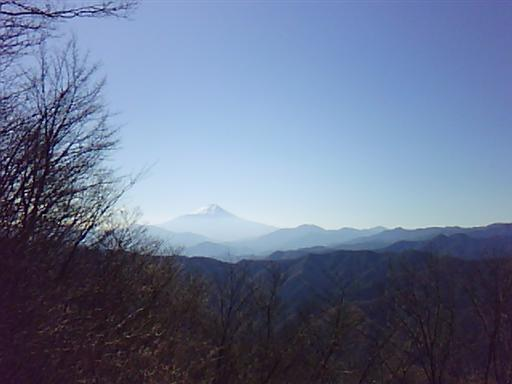

三頭山山頂到着。標高1531m。
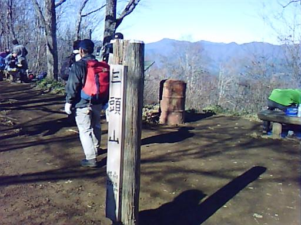
山頂は相変わらず大勢の人で賑わっている。
昔は奥多摩の秘峰と言われ訪れる人が少なかったのだが、
都民の森が整備され、奥までバスが入るようになってからは気軽に登れる山になってしまった。
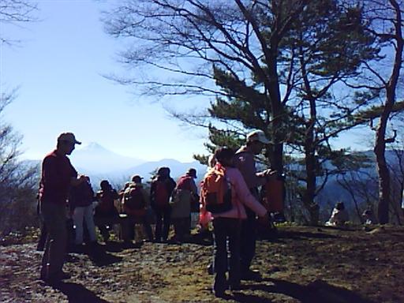
山頂からは左にこれから向かう御前山、右に明日向かう大岳山が見えている。
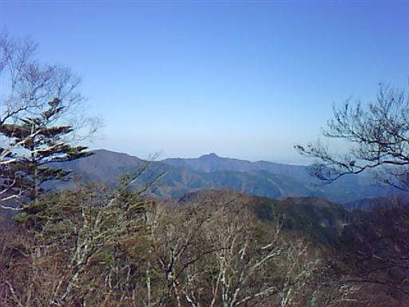
登山道には落ち葉がたくさん積もっている。
三頭山-御前山間は歩く人が少ないので、落ち葉もシャキッとしていて歩くと気持ちがよい。
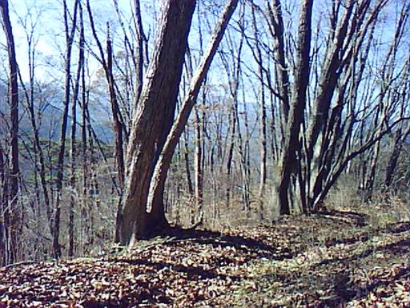
月夜見山に到着。
美しい名前とは裏腹に特に目立たない冴えないピークだ。
この辺りでやたら左膝が痛くなってくる。膝を痛めてしまったか…
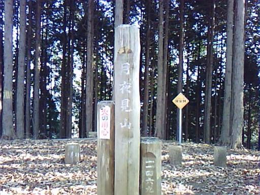
思ったよりも御前山は遠く、歩いている途中で日が落ちてしまった。
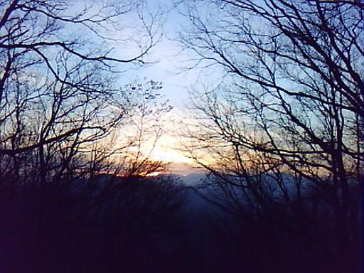
御前山山頂到着。標高1405m。
だいぶ暗くなったこの山頂には当然人影は無い。
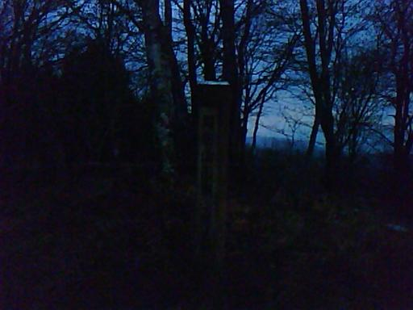
空も少しずつ暗くなってくる。
最後の10分ほどはヘッドライトをつけて歩き、17時ごろに御前山避難小屋に到着する。
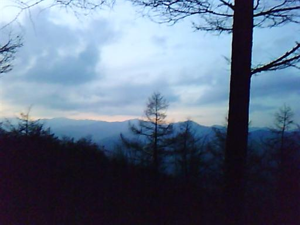
御前山避難小屋には先着者が2名いて残念ながら貸切ではないようだ。
持ち寄った食材と酒で宴会を始める。
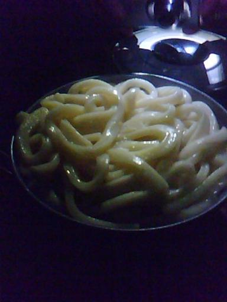